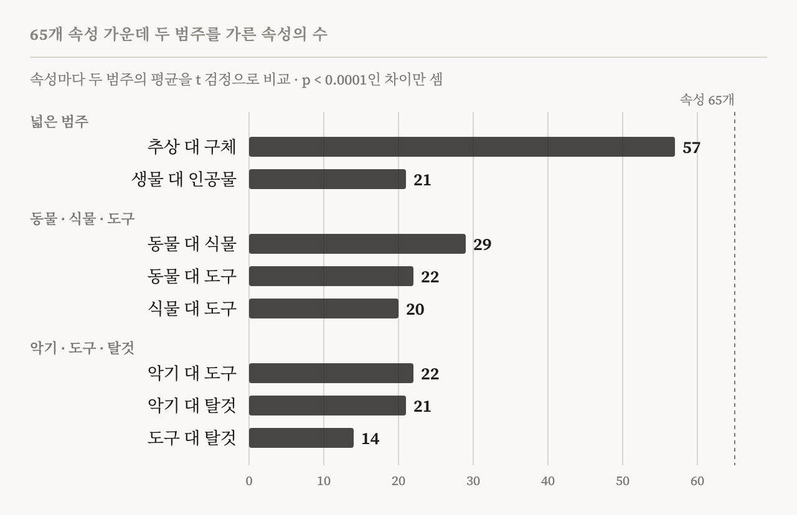
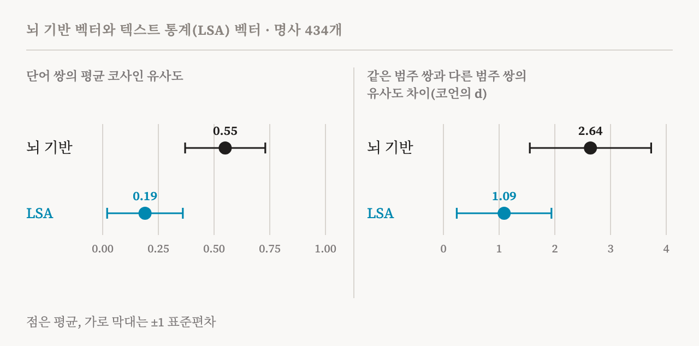
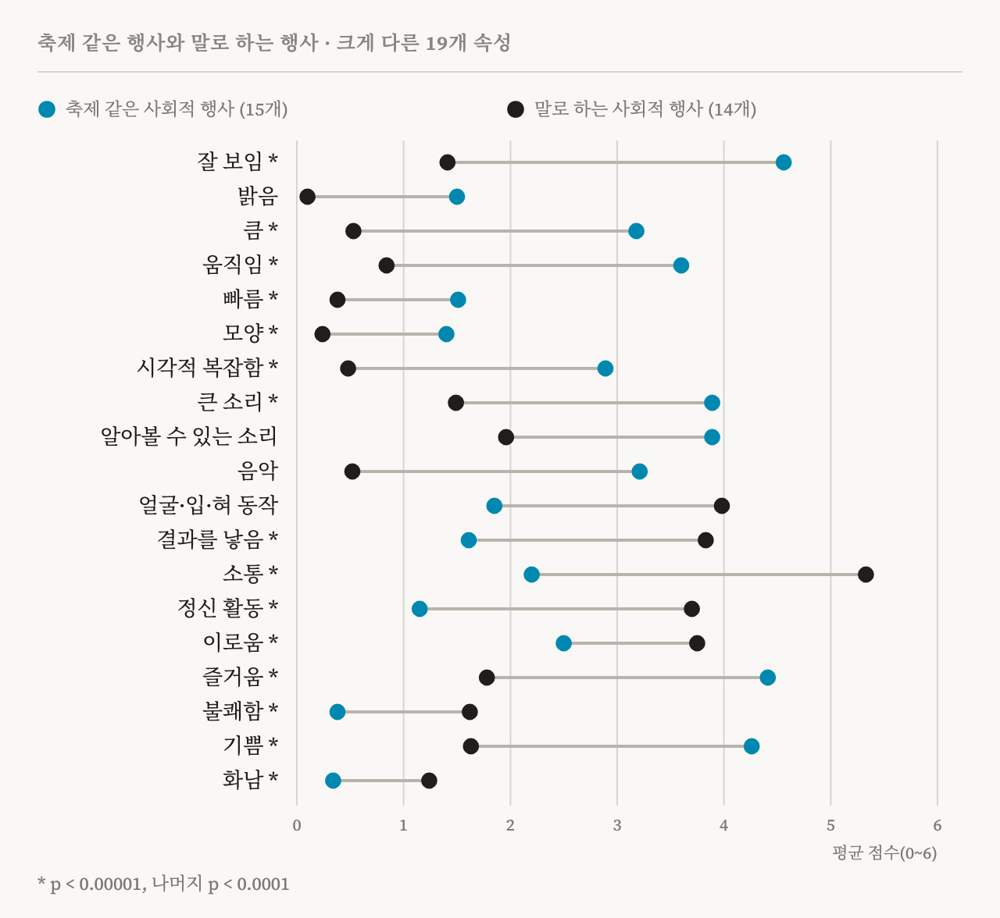
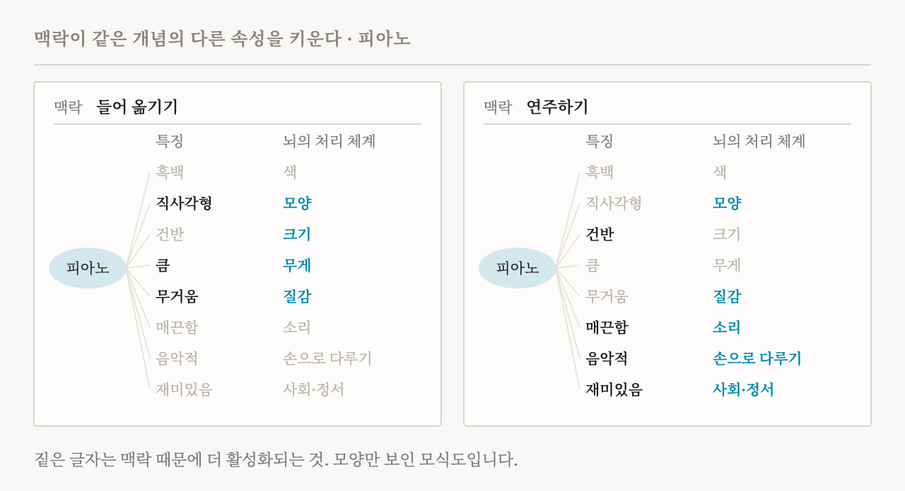
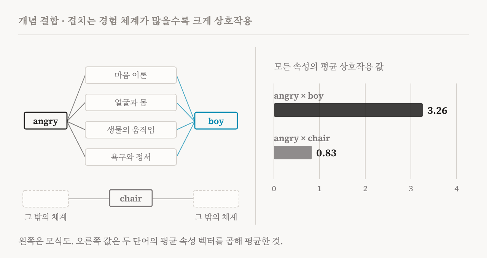

이 글은 Jeffrey R. Binder와 동료들이 2016년 『인지 신경심리학(Cognitive Neuropsychology)』에 낸 「뇌에 기반한 성분 의미 표상을 향하여(Toward a brain-based componential semantic representation)」를 두 편으로 나누어 정리하는 가운데 2부입니다. 1부는 앞 글 「뇌가 겪는 경험으로 단어의 뜻 나누기 1부: 경험 속성 65가지」에서 정리했습니다. 주장과 해석은 모두 저자들의 것입니다. ‘쉬운 풀이’ 상자는 읽기를 돕기 위해 덧붙인 설명과 비유로, 원문에는 없습니다.
1부의 내용은 이렇습니다. 저자들은 개념의 성분을 ‘날개’나 ‘깃털’ 같은 낱말 특징이 아니라 뇌가 따로 처리하는 경험의 종류로 정하자고 제안하고, 감각, 운동, 공간, 시간, 인과, 사회, 인지, 정서, 욕구, 주의에 걸친 경험 속성 65개를 골랐습니다. 그리고 영어 단어 535개가 각 속성과 얼마나 관련되는지를 사람들에게 0~6점으로 평가받았습니다. 단어마다 이 65개 점수의 평균이 그 단어의 속성 벡터입니다. 2부는 이 벡터로 저자들이 무엇을 보였는지, 그리고 이 표상이 의미 이론의 오래된 문제에 어떤 답을 줄 수 있다고 보는지를 다룹니다.
범주마다 다른 경험의 모양
미리 정한 범주 몇 개에 속한 단어들의 평가를 평균 내어, 주요 의미 범주의 평균 속성 벡터를 구했습니다. 원문 도판 1과 2는 표 4의 명사 범주 가운데 12개(동물, 사람, 식물, 악기, 도구, 탈것, 사회적 행사, 소리, 날씨 현상, 감정, 사회적 개념, 시간 단위)의 평균 벡터를 원형 그래프로 보여 주고, 도판 3은 동사 범주 셋(몸 동작, 위치를 바꾸는 동작, 사회적 행동)을 보여 줍니다. 세 동사 범주는 위치를 바꾸는 동작을 표시하는 이동 경로 속성과 사회적 행동을 표시하는 사람 사이의 상호작용 속성을 빼면, 비슷한 속성들을 서로 다른 비율로 불러일으켰습니다. 물리적 형용사의 평가는 그 형용사가 가리키는 감각 영역(시각, 몸 감각, 청각 등)을 반영했습니다.
표 4의 범주 이름을 써서 의미 범주 사이에 유의하게 다른 속성, 곧 범주 구분의 정신적 표상에 기여할 수 있는 속성을 찾았습니다. 비교마다 65개 속성 각각에 대해 독립 표본 t 검정으로 한 범주 단어들의 평균 평가와 다른 범주의 평균 평가를 견주었습니다. 저자들은 이 결과가 이번 연구에 우연히 뽑힌 단어들에 한정되고 같은 범주의 다른 표본으로 일반화되지 않을 수 있다는 점, 그리고 비교 횟수가 많다는 점 때문에 p < 0.0001에서 유의한 차이만 기술합니다.

먼저 상위 범주인 인공물(132개), 생물(128개), 추상적인 것(99개)을 비교했습니다. 많은 속성이 이 범주들을 갈랐습니다. 당연하게도 추상적인 것은 감각 경험과 관련된 거의 모든 속성에서 두 구체 범주보다 유의하게 낮았습니다. 예외는 생물의 움직임, 얼굴, 몸의 부분, 말소리, 사람 같은 의도처럼 동물과 사람에게 특유한 속성으로, 여기서는 인공물이 추상적인 것만큼, 또는 그보다 낮았습니다. 반대로 추상적인 것은 시간과 인과 경험(정해진 때, 정해진 길이, 긴 시간, 짧은 시간, 원인이 있음, 결과를 낳음), 사회적 경험(사람 사이의 상호작용, 소통, 자기 이미지), 정서 경험(불쾌함, 슬픔, 화남, 역겨움, 두려움, 놀람, 동기, 각성)과 관련된 속성에서 구체 범주보다 높았습니다. 모두 65개 속성 가운데 57개가 추상적인 것과 구체적인 것을 갈랐습니다.
생물과 인공물은 앞서 말한 동물과 사람 특유의 속성으로 갈렸습니다. 그 밖에 생물은 움직임과 느림에서 평균적으로 더 높아, 움직임의 성질이 더 두드러지는 경향을 보였습니다. 화남, 역겨움, 두려움, 놀람 같은 정서 속성에서도 생물이 인공물보다 높았지만, 두 구체 범주 모두 이 평가는 비교적 낮았습니다. 반대로 인공물은 큼, 지도 위의 고정 위치, 장면에서 생물보다 높았는데, 저자들은 이 표본에 건물이 많이 들어간 탓일 것이라고 봅니다. 인공물은 온도, 음악(악기가 많이 들어간 탓), 팔·손 동작, 직접 다뤄 본 경험, 그리고 여러 시간 속성(정해진 때, 정해진 길이, 짧은 시간)에서도 높았습니다. 다만 시간 속성은 두 구체 범주 모두 추상적인 것보다 낮았습니다. 모두 65개 속성 가운데 21개가 생물과 인공물을 갈랐습니다.
다음은 더 구체적인 범주인 동물(30개), 식물(30개), 도구(27개)의 비교입니다. 범주 특이적 의미 장애 환자에게서 이 세 범주만 비교적 선택적으로 손상되는 일이 자주 보고됩니다. 자료는 예상된 결과를 여럿 보여 주었습니다. 동물은 움직임 관련 속성에서 식물과 도구보다 높았고, 식물은 음식으로서의 역할 때문에 맛, 냄새, 얼굴·입·혀 동작에서 높았으며, 도구와 식물은 손으로 다루는 일과 관련된 속성(만져서 앎, 팔·손 동작, 직접 다뤄 본 경험)에서 높았습니다. 소리 관련 속성은 동물이 가장 높고 도구가 중간이며 식물은 거의 0이었습니다. 색도 식물 > 동물 > 도구로 셋이 갈렸고, 시각적 복잡함은 동물이 더 높았습니다. 공간 영역에서는 동물이 이동 경로가 더 두드러지고, 도구가 일상에서 더 가까이 있는 것으로 평가되었습니다. 도구는 결과를 낳음, 사회적 경험, 동기, 필요와 더 관련된 것으로 평가되었습니다. 도구와 식물은 동물보다 이로운 것으로, 식물은 도구보다 즐거운 것으로 여겨졌습니다. 동물과 도구는 식물보다 해로울 가능성이 크다고 여겨졌고, 동물은 두려움, 놀람, 주의를 끎, 각성에서도 높아, 다른 범주보다 잠재적 위협으로 여겨짐을 시사했습니다. 동물과 식물은 29개, 동물과 도구는 22개, 식물과 도구는 20개 속성에서 갈렸습니다.
인공물 안에서는 악기(20개), 도구(27개), 탈것(20개)을 비교했습니다. 이번에도 예상된 결과가 여럿 나왔습니다. 탈것은 움직임 관련 속성(움직임, 생물의 움직임, 빠름, 느림, 이동 경로, 나에게서 멀어짐)에서, 악기는 소리 관련 속성(잘 들림, 큰 소리, 낮은 소리, 높은 소리, 알아볼 수 있는 소리, 음악)에서 높았습니다. 도구는 손으로 다룬 경험을 반영하는 속성(만져서 앎, 팔·손 동작, 직접 다뤄 본 경험, 가까이 있음)에서 높았습니다. 개인이 직접 다뤄 보거나 해 본 정도를 담는 직접 다뤄 본 경험 속성의 중요성이 여기서 드러납니다. 도구는 이 속성에서 악기보다 훨씬 높았지만, 팔·손 동작 속성에서는 두 범주가 다르지 않았습니다. 크기는 예상대로 탈것 > 악기 > 도구였고, 악기와 탈것은 시각적 복잡함에서 도구보다 높았습니다. 더 추상적인 영역에서는 악기가 소통(“사람들이 소통에 쓰는 것이나 행동”)과 정신 활동(“정신 활동의 한 형태나 마음의 기능”)에서 높아 정신 활동과 더 강하게 연관됨을 시사했고, 즐거움, 기쁨, 슬픔, 놀람, 주의를 끎, 각성에서도 높아 정서와 각성과의 연관이 더 강함을 시사했습니다. 도구와 탈것은 이로움과 해로움 모두에서 악기보다 높았고, 도구는 필요(“없으면 살기 힘든 누군가나 무언가”)에서 높았습니다. 악기와 도구는 22개, 악기와 탈것은 21개, 도구와 탈것은 14개 속성에서 갈렸습니다.
저자들은 이런 범주 간 차이가 대체로 직관에 맞고 상당수는 이미 보고된 것이라고 말합니다. 그리고 이 차이들이 분류 범주 구조의 복잡성을 보여 주며, 이 자료로 그 복잡성을 탐색할 수 있음을 보여 준다고 덧붙입니다.
텍스트 통계와 견주기
미리 정한 범주 이름은 같은 범주에 속한 단어 사이의 의미 거리와 다른 범주에 속한 단어 사이의 의미 거리를 비교하는 데도 쓸 수 있습니다. 저자들은 표본의 명사 434개 전부에 대해 단어 쌍의 코사인 유사도 행렬을 두 가지로 만들었습니다. 하나는 뇌 기반 표상으로, 다른 하나는 큰 텍스트 말뭉치의 잠재 의미 분석(LSA)에서 얻은 표상으로 만든 것입니다. 뇌 기반 벡터와 견줄 수 있게 LSA 벡터를 65차원으로 줄였는데, 300차원 LSA 표상으로도 매우 비슷한 결과가 나왔습니다.
두 행렬은 약하게 상관했습니다(r = 0.31, p < 0.00001). 코사인 유사도는 뇌 기반 벡터에서 훨씬 높은 편이었습니다(평균 0.55, 표준편차 0.18; LSA 평균 0.19, 표준편차 0.17; p < 0.00001). 더 중요한 것은, 코사인 유사도가 대체로 같은 범주 쌍에서 다른 범주 쌍보다 컸고, 단어마다 이 차이를 코언의 d 효과 크기로 재어 보니 뇌 기반 벡터(평균 2.64, 표준편차 1.09)에서 LSA 벡터(평균 1.09, 표준편차 0.85)보다 훨씬 컸다는 점입니다(p < 0.00001). 저자들은 두 벡터 모두 미리 정한 범주 구조를 반영하는 정보를 담지만, 뇌 기반 벡터가 같은 범주에 속한다는 효과를 유의하게 더 크게 보인다고 결론짓습니다.

데이터가 스스로 묶은 범주
코사인 유사도로는 미리 정한 범주 이름 없이 의미가 가까운 개념의 ‘이웃’도 찾을 수 있습니다. 아래 표는 그 예입니다(전체 목록은 내려받을 수 있습니다). 저자들은 이 결과가 표상이 개념 사이의 의미 유사성을 담는다는 또 하나의 증거라고 보지만, 더 검증하려면 이 거리를 유사성 판단 자료나 점화 자료와 직접 비교해야 한다고 말합니다.
| 단어 | 가장 가까운 이웃 |
|---|---|
| actor | artist, reporter, priest, journalist, minister, businessman, teacher, boy, editor, diplomat |
| advice | apology, speech, agreement, plea, testimony, satire, wit, truth, analogy, debate |
| airport | jungle, highway, subway, zoo, cathedral, farm, church, theater, store, bar |
| apricot | tangerine, tomato, raspberry, cherry, banana, asparagus, pea, cranberry, cabbage, broccoli |
| arm | hand, finger, shoulder, leg, muscle, foot, eye, jaw, nose, lip |
| army | mob, soldier, judge, policeman, commander, businessman, team, guard, protest, reporter |
| ate | fed, drank, dinner, lived, used, bought, hygiene, opened, worked, barbecue, played |
| avalanche | hailstorm, landslide, volcano, explosion, flood, lightning, cyclone, tornado, hurricane |
| banjo | mandolin, fiddle, accordion, xylophone, harp, drum, piano, clarinet, saxophone, trumpet |
| bee | mosquito, mouse, snake, hawk, cheetah, tiger, chipmunk, crow, bird, ant |
| beer | rum, tea, lemonade, coffee, pie, ham, cheese, mustard, ketchup, jam |
| belch | cough, gasp, scream, squeal, whine, screech, clang, thunder, loud, shouted |
| blue | green, yellow, black, white, dark, red, shiny, ivy, cloud, dandelion |
| book | computer, newspaper, magazine, camera, cash, pen, pencil, hairbrush, keyboard, umbrella |
유사성 구조를 더 넓게 보려고, 단어마다 평균 속성 벡터를 입력으로 k-평균 군집 분석을 했습니다. 표 4의 범주 수와 비슷하게 군집 수를 20에서 30까지 바꾸며 여러 번 분석했고, 결과는 이 범위에서 매우 비슷했지만 25~28개일 때 가장 해석하기 쉬웠습니다. 아래는 28개 해입니다. 저자들은 이 수가 자료의 ‘진짜’ 군집 수라고 주장하지 않습니다. 개념 조직은 본래 위계적이고 유사성의 정도 문제여서, 범주의 수는 어떤 구분을 하고 싶으냐(동물 대 도구, 개과 대 고양이과, 개 대 늑대, 사냥개 대 스패니얼)에 달려 있습니다. 목적은 k-평균 군집의 ‘입자 크기’를 미리 정한 상위 범주의 입자 크기와 대략 맞춰 둘을 비교하는 것이었습니다.
| 묶음 | 수 | 묶음 | 수 |
|---|---|---|---|
| 동물 | 30 | 말로 하는 사회적 행사 | 14 |
| 몸의 부분 | 13 | 부정적인 자연 사건 | 16 |
| 사람의 기본 유형 | 7 | 말이 아닌 소리 | 11 |
| 중립적인 직업·역할 | 37 | 먹고 마시는 일 | 5 |
| 폭력과 얽힌 사람 | 6 | 이로운 추상 개념 | 20 |
| 식물과 음식 | 44 | 중립적인 추상 개념 | 23 |
| 크고 밝은 것 | 3 | 인과와 얽힌 개념 | 19 |
| 사회적이지 않은 장소 | 22 | 부정적 정서의 개념 | 30 |
| 사회적 장소 | 20 | 긍정적 정서의 개념 | 22 |
| 도구와 가구 | 43 | 시간 개념 | 16 |
| 악기 | 23 | 위치를 바꾸는 동작 | 14 |
| 시끄러운 탈것 | 6 | 중립적인 행동 | 23 |
| 조용한 탈것 | 18 | 부정적인 행동과 속성 | 16 |
| 축제 같은 사회적 행사 | 15 | 감각적 속성 | 19 |
평가 자료에서 나온 군집 몇 개는 미리 정한 범주와 거의 일치했습니다. 동물은 30개가 모두 한 군집에 모였고, 몸의 부분은 14개 가운데 13개, 악기는 20개가 모두 모였습니다. 몸의 부분 하나(hair)는 도구와 가구 군집에 들어갔고, 소리를 내는 인공물 셋(megaphone, television, cellphone)이 악기와 함께 묶였습니다. 평가에 기반한 군집은 먹을 수 있는 식물과 가공 식품을 가르지 않고 한 음식 군집으로 합쳤는데, 이 군집에서 먹을 수 없는 큰 식물(elm, ivy, oak, tree)은 빠졌습니다. 마찬가지로 가구와 도구를 가르지 않고 한 군집으로 합쳤고, 이 군집에는 다른 손으로 다루는 인공물 대부분(book, door, computer, magazine, medicine, newspaper, ticket, window)과 작은 비인공물 몇 개(feather, hair, ice, stone)도 들어갔습니다.
데이터에 기반한 군집은 범주 안에서도 그럴듯한 구분을 여럿 찾아냈습니다. 사람의 기본 생물학적 유형(woman, man, child 등)이 직업적 역할과 갈렸고, 부정적이거나 폭력적인 연상을 지닌 개인이나 집단이 따로 군집을 이루었습니다. 중립적인 직업·역할과 비교하면, 사람의 기본 유형은 감각 경험(모양, 시각적 복잡함, 만져서 앎, 온도, 질감, 높은 소리, 알아볼 수 있는 소리, 냄새), 가까움(가까이 있음, 자기 이미지), 긍정적 정서(기쁨) 관련 속성에서 유의하게 높았습니다. 예를 들어 가까이 있음은 2.91 대 0.84, 기쁨은 3.50 대 1.76였습니다. 장소는 두 무리로 나뉘었는데, 저자들은 이를 사회적이지 않은 장소와 사회적 장소라고 이름 붙였습니다. 이 구분은 미리 정한 자연 경관 대 장소·건물 구분과 대체로 맞았지만, 사회적이지 않은 장소에는 사람이 만든 장소도 몇 개(apartment, fence, bridge, street 등) 들어갔습니다. 사회적 장소는 사람 사이의 상호작용 관련 속성(사람 사이의 상호작용 3.31 대 0.84, 소통, 결과를 낳음)에서 높았고, 사회적이지 않은 장소는 여러 감각 속성(색, 무늬, 모양, 만져서 앎, 질감)에서 높았습니다. 데이터 기반 군집은 탈것을 다른 인공물과 가를 뿐 아니라, 시끄러운 탈것과 조용한 탈것도 갈랐습니다(큰 소리 평균 5.30 대 1.96). 시끄러운 탈것은 다른 청각 속성(잘 들림, 높은 소리, 알아볼 수 있는 소리)에서도 유의하게 높았습니다. 두 탈것 군집에는 예상 밖의 단어 넷(fireworks, fountain, river, soccer)이 들어갔는데, 저자들은 탈것을 다른 무생물과 가르는 움직임과 이동 경로 속성에서 이 단어들이 높게 평가된 탓일 것이라고 봅니다.
사건 명사에서는 미리 정한 사회적 행사 범주가 두 군집으로 나뉘었고, 저자들은 이를 축제 같은 사회적 행사와 말로 하는 사회적 행사라고 이름 붙였습니다. 축제 같은 행사는 시각적 모양, 시각적 움직임, 소리와 관련된 여러 감각 속성에서 유의하게 높았고 더 즐겁고 기쁜 것으로 평가되었습니다. 말로 하는 행사는 사람의 인지와 관련된 속성(소통, 정신 활동, 결과를 낳음)에서 높았고, 흥미롭게도 축제 같은 행사보다 더 불쾌하면서 더 이로운 것으로 평가되었습니다. 부정적인 자연 사건 군집은 대체로 날씨 현상 범주와 맞았고, 날씨와 무관한 부정적이거나 폭력적인 사건 몇 개(explosion, stampede, battle 등)가 더해졌습니다. 말이 아닌 소리 군집은 같은 이름의 범주와 거의 일치했습니다. 마지막으로 먹고 마시는 일이라는 작은 군집에는 사회적 행사 몇 개와 먹고 마시는 동사가 들어갔고, 맛, 냄새, 팔·손 동작, 얼굴·입·혀 동작, 나에게 다가옴, 즐거움, 이로움, 필요의 높은 평가로 이어졌습니다.

추상 명사에서는 데이터 기반 군집과 미리 정한 범주의 대응이 덜 분명했습니다. 군집 분석은 주로 이로움과 긍정적 정서와의 연관으로 갈리는 추상 개념 군집 둘을 내놓았고, 저자들은 이를 이로운 것과 중립적인 것이라고 이름 붙였습니다. 두 군집에는 다양한 추상 개념과 정신적 구성물이 들어 있습니다. 이로운 추상 개념은 중립적인 추상 개념보다 이로움(4.68 대 2.31), 자기 이미지, 즐거움, 기쁨, 동기, 필요, 각성 등에서 높았습니다. 세 번째 군집인 인과와 얽힌 개념은 결과를 낳음(4.47 대 2.22)과 사람 사이의 상호작용에서 높은 개념들입니다. 다른 두 군집은 강한 부정적 정서와 긍정적 정서의 뜻이나 연상을 지닌 추상 개념입니다. 부정적 정서의 개념은 어두움, 통증, 결과를 낳음, 해로움, 불쾌함, 슬픔, 화남, 역겨움, 두려움에서, 긍정적 정서의 개념은 잘 보임, 밝음, 음악, 자기 이미지, 이로움, 즐거움, 기쁨, 없으면 살기 힘듦에서 높았습니다. 추상 개념의 마지막 군집은 대체로 시간 단위 범주와 맞았지만, 시간의 길이와 연관된 속성어(new, old, young)와 동사(grew, slept)도 들어갔습니다.
동사가 주를 이루는 군집은 셋이었습니다. 위치를 바꾸는 동작 군집은 같은 이름의 범주와 거의 일치했고, 공간 속 움직임과 관련된 속성에서 높았습니다(예를 들어 이동 경로 5.10 대 2.05, 다리·발 동작 3.86 대 1.11). 두 번째 군집은 정서적으로 중립적인 신체 행동과 사회적 행동이 섞여 있었고, 마지막 군집은 부정적이거나 폭력적인 연상을 지닌 동사와 형용사가 섞여 있었습니다. k-평균 분석의 마지막 군집은 거의 모두 물리적인 감각 성질, 곧 색, 표면의 모습, 촉감, 온도, 무게를 묘사하는 형용사였습니다.
계층 군집
밑에 깔린 범주 구조를 더 자세히 보려고 구체 명사(사물과 사건) 335개로 계층 군집 분석을 했습니다. 결과로 나온 계통도에서도 주요 범주가 뚜렷이 드러났고, 흥미로운 하위 구분이 여럿 나타났습니다. 따로 군집을 이룬 악기는 입으로 부는 악기와 팔만 쓰는 악기로 나뉘었고, 팔만 쓰는 악기 안에는 두드리는 악기가 조금 따로 모여 있었습니다. 피아노는 다리·발 동작 평가가 높은 탓인지 따로 가지를 이루었습니다. 사람 개념도 따로 군집을 이루었고, 그 안에 ‘민간 부문’ 직업, ‘공공 부문’ 직업, 사람의 기본 유형, 부정적이거나 폭력적인 연상을 지닌 사람 개념의 하위 무리가 있었습니다.
동물도 따로 군집을 이루었는데, 둘(ant, butterfly)은 가까운 가지에 따로 떨어져 있었습니다. 동물은 물에 사는 동물, 작은 육상 동물, 큰 동물, 불쾌한 동물(alligator가 든 무리)로 어느 정도 나뉘었습니다. 흥미롭게도 이 표본에서 사람을 태우는 데 쓰이는 동물인 camel과 horse가 함께 묶였는데, ‘사람을 태우는 데 쓰임’을 직접 담는 속성은 없습니다. 벡터를 살펴보니 두 동물은 다른 동물보다 다리·발 동작과 이로움 평가가 높았습니다. 다리의 움직임과 연관되고 사람에게 이롭다는 것만으로 탈것으로 쓰이는 동물임을 표시하기에 충분해 보인다는 것이 저자들의 해석입니다. 마지막으로 식물과 음식은 큰 가지를 이루었고, 그 안에 음료, 과일, 가공 식품, 채소, 꽃의 하위 무리가 있었습니다.
추상 명사 99개로도 같은 분석을 했습니다. 큰 가지 셋이 나왔습니다. 가장 큰 가지는 중립적이거나 긍정적인 뜻의 추상 개념이었습니다. 그 안에는 긍정적이거나 이로운 개체의 하위 무리(attribute에서 gratitude까지), 결과를 낳을 가능성이 큰 ‘인과적’ 개념의 꽤 뚜렷한 하위 무리(motive에서 fate까지), 수나 수량화와 연관된 개념의 하위 무리(noun에서 infinity까지)가 있었습니다. 뜻이 비슷한 쌍(advice/apology, treaty/truce)과 세 단어 묶음(irony/paradox/mystery)도 보였습니다. 두 번째 큰 가지는 해로움이나 다른 부정적 뜻과 연관된 개념이었습니다. 부정적 감정을 나타내는 단어의 하위 무리(guilt에서 dread까지), 분노와 연관된 사회적 상황으로 보이는 하위 무리(snub에서 grievance까지), 어려움이나 불운과 관련된 세 단어(sin/curse/problem), 오류나 판단 잘못과 관련된 세 단어(fallacy/folly/denial)가 있었습니다. 마지막 가지는 시간 단위를 나타내는 개념(day, morning, summer, spring, evening, night, winter)이었습니다.
단어 빈도, 심상성, 단어 꼴과의 관계
단어가 쓰이는 빈도는 개념의 빈도와 중요성을 대략 보여 줍니다. 저자들은 가까움이나 자기의 필요와 관련된 속성이 단어 빈도와 상관할 것이라고 예측했습니다. 심상성(imageability)은 개체의 감각, 특히 시각 속성이 전반적으로 얼마나 두드러지는지를 대략 보여 주므로, 감각과 운동 경험 관련 속성과 상관할 것이라고 예측했습니다. 검정이 많아 생기는 1종 오류를 줄이려고 유의 수준을 0.00001(r = 0.1673)로 잡았습니다.
단어 빈도는 가까이 있음, 자기 이미지, 이로움, 동기, 필요와 양의 상관을 보여, 단어 빈도가 개념의 가까움과 생존상의 중요성을 반영한다는 예상과 맞았습니다. 얼굴, 몸의 부분, 말소리, 사람 같은 의도처럼 사람에게 특유한 속성과도 양의 상관을 보였는데, 같은 종의 개체가 가깝고 중요하다는 점을 반영합니다. 반면 색, 무늬, 작음, 모양, 온도, 질감, 무게, 잘 들림, 큰 소리, 낮은 소리, 높은 소리, 알아볼 수 있는 소리, 음악, 맛 같은 여러 감각 속성과는 음의 상관을 보였습니다. 저자들이 드는 한 가지 설명은, 지각적 특징이 매우 두드러지는 일부 자연물 범주, 특히 동물, 식물, 악기가 일상 경험과 언어 사용에서는 훨씬 덜 두드러진다는 것입니다.
예상대로 감각과 운동 속성 대부분은 심상성과 양의 상관을 보였습니다(p < 0.00001). 잘 보임, 밝음, 어두움, 색, 무늬, 큼, 작음, 움직임, 생물의 움직임, 빠름, 느림, 모양, 시각적 복잡함, 만져서 앎, 온도, 무게, 큰 소리, 낮은 소리, 높은 소리, 알아볼 수 있는 소리, 맛, 냄새, 팔·손 동작, 직접 다뤄 본 경험이 그렇고, 시각–공간 속성인 지도 위의 고정 위치, 장면, 가까이 있음, 나에게 다가옴도 양의 상관을 보였습니다. 반대로 지각과 무관한 여러 속성은 심상성과 음의 상관을 보였습니다. 시간과 인과 성분(정해진 길이, 긴 시간, 짧은 시간, 원인이 있음, 결과를 낳음), 사회와 인지 성분(사람 사이의 상호작용, 사람 같은 의도, 소통, 자기 이미지, 정신 활동), 정서와 각성 성분(불쾌함, 슬픔, 화남, 역겨움, 두려움, 놀람, 동기, 각성)입니다.
자료가 커서 의미 속성과 의미 외적인 어휘 변수 사이의 예상치 못한 관계도 찾아볼 수 있었습니다. 앞선 연구는 뜻과 품사의 음운적 상관물을 여럿 찾았고, 이는 단어 꼴의 진화가 완전히 자의적이지 않고 뜻과 화용 요인의 영향을 일부 받는다는 것을 시사합니다. 탐색적 분석으로 65개 의미 속성과 길이(음소 수), 철자 전형성(위치 제약 바이그램 빈도, 철자 이웃 크기), 음운 전형성(음운 이웃 크기)의 상관을 구했습니다. 이번에도 유의 수준을 0.00001로 잡아, 다른 무작위 단어 표본에서도 유지될 가능성이 큰 매우 강한 효과에 집중했습니다.
단어 길이(음소 수)는 가까이 있음, 필요와 음의 상관을 보였고, 직접 다뤄 본 경험과는 강한 경향(p < 0.0001)을 보였습니다. 가까이 있고, 필요의 중심에 있고, 자주 다루는 것에는 짧은 단어가 쓰인다는 뜻입니다. 마찬가지로 철자 이웃 크기는 가까이 있음, 필요, 직접 다뤄 본 경험과 양의 상관을 보였고 만져서 앎, 자기 이미지와는 강한 경향을 보였습니다. 음운 이웃 크기는 가까이 있음, 직접 다뤄 본 경험과 양의 상관을, 필요, 만져서 앎과 강한 경향을 보였습니다. 이 상관들은 함께, 우리 필요에 중요한 가까운 사물을 가리키는 개념이 더 짧거나 단순하고 흔한 철자 패턴을 공유하는 형태소로 나타나는 경향이 있음을 시사합니다. 위치 제약 바이그램 빈도는 어떤 속성과도 유의하게 상관하지 않았는데, 저자들은 의미 변수가 주로 글자 쌍보다 큰 단위에 영향을 준다는 뜻일 수 있다고 봅니다.
쓰임새: 뇌 영상과 범주 특이적 손상
저자들은 이 연구의 의도가 비교적 포괄적인 뇌 기반 성분 의미 모형의 윤곽을 그리고, 이런 표상의 성질을 탐색하는 것이었다고 정리합니다. 앞선 연구를 바탕으로, 경험의 모든 측면이 뇌에 부호화되고 정보 내용에 따라 처리된다는 원칙에 따라 표상을 여러 감각과 운동 하위 영역, 공간과 시간 같은 더 복잡한 물리 영역, 정신적 경험까지 넓혔습니다. 표상의 쓸모는 결국 얼마나 완전하고 정확한가에 달려 있고, 이는 어떤 속성을 넣고 어떤 질문으로 평가를 얻었는가에 크게 좌우됩니다. 저자들은 이 선택이 거의 확실히 불완전하다고 보고, 이 작업을 앞으로의 개선으로 이어지기를 바라는 예비 탐색으로 여깁니다.
이 표상 체계는 뇌의 개념 표상 이론에서 나왔으므로, 주된 쓸모이자 주된 검증 수단은 뇌 연구일 것입니다. Fernandino와 동료들(2015)의 연구가 한 예입니다. 이들은 명사 개념 900개를 색, 시각적 움직임, 모양, 소리, 조작의 5개 속성으로 평가받았습니다. 참여자가 이 단어들을 읽으며 구체성 판단을 하는 동안 fMRI를 찍었더니, 속성마다 그 두드러짐에 따라 조절되는 별개의 뇌 신경망과, 여러 속성이나 모든 속성에 반응하는 여러 수준의 수렴 영역이 나타났습니다. 앞으로의 연구는 감각 영역 안팎의 훨씬 넓은 정보 유형을 담을 수 있을 것입니다.
또 다른 쓰임새는 뇌 손상이 일으키는 범주 특이적 의미 결함 연구입니다. 이런 증후군의 환자는 넓은 범주(생물 대 인공물)나 더 구체적인 범주(동물, 도구, 식물, 몸의 부분, 악기 등)의 사물 개념을 처리하는 능력이 서로 다릅니다. 체화 이론의 설명은 사물 범주마다 기대는 감각운동 지식의 종류가 체계적으로 다르다는 것입니다. 예를 들어 생물은 시각 속성이, 도구와 다른 인공물은 행동 관련 속성이 더 두드러진다고 합니다. Gainotti가 논의했듯 생물 지식의 더 큰 손상은 보통 고차 시각 사물 지각을 맡는 전측 복측 측두엽 손상과, 도구 지식의 더 큰 손상은 사물을 향한 행동을 맡는 전두–두정 손상과 연관됩니다. 그러나 반례도 있습니다. 고차 시각 지각 결함이 있어도 생물만 선택적으로 손상되지 않은 환자, 시각 지각이 정상으로 보이는데도 생물만 손상된 환자가 보고되었습니다.
저자들은 이번 자료가 범주 구분이 훨씬 복잡한 속성 조합에서 생길 수 있다는 최근의 제안을 지지한다고 말합니다. 도판 1의 비교에서 보듯 구체 사물 범주는 특정 시각 하위 체계(시각적 움직임, 생물의 움직임, 얼굴 지각), 시각 밖의 감각 체계(소리, 맛, 냄새), 정서와 각성 연관, 공간 속성, 사회 인지 관련 여러 속성 등 여러 영역에 걸쳐 서로 다릅니다. 이 처리 체계 가운데 어느 하나, 또는 공간적으로 가까운 체계 조합이 손상되면 범주별로 다른 손상이 설명될 수 있습니다. 예를 들어 생물 손상과 전측 복측 측두엽 손상의 연관은 고차 시각 지식 자체의 손상 때문이 아니라, 고차 시각, 맛, 냄새, 정서 체계가 수렴하는 영역의 손상 때문일 수 있습니다. 이 자료는 또 음식, 악기, 탈것, 사람의 역할, 장소, 사건, 시간 개념, 위치를 바꾸는 동작, 사회적 행동처럼 신경심리학 문헌에서 체계적으로 다뤄지지 않은 두드러진 범주들의 진단적 속성 구성도 밝혀 줍니다. 각 범주는 특히 두드러진 속성의 고유한 부분 집합으로 정의되므로, 그 속성의 지식에 영향을 주는 뇌 손상이 그 범주에 특이한 손상을 일으킬 수 있습니다. 데이터 기반 군집 분석에서는 사회적 장소와 사회적이지 않은 장소, 말로 하는 사회적 행사와 축제 같은 사회적 행사, 그리고 다른 세 사건 유형(부정적 사건, 소리, 먹고 마시는 일) 같은 새로운 구분이 나왔습니다. 저자들은 이 군집이 어느 정도는 개념 표본의 특이성을 반영할 것이지만, 더 넓은 개념으로 후속 연구에서 다룰 흥미로운 가능성을 제기한다고 말합니다.
특징을 고르는 문제와 무게를 다는 문제
경험적 신경과학 연구에서의 쓸모와 별개로, 뇌 기반 성분 표상은 오래된 이론 문제 몇 가지에 다른 답을 줄 수 있습니다.
첫째는 특징 선택입니다. 모든 분석적, 성분적 의미 이론은 무엇이 특징으로 치는가, 특징의 집합을 어떻게 정하는가라는 문제를 안고 있습니다. 앞서 말했듯 낱말 특징 이론은 가능한 사물과 행동의 특징이 지나치게 많다는 근본 문제에 부딪힙니다. 저자들은 근본적으로 다른 방식을 택합니다. 개념의 내용은 사람들이 개념과 연관 짓는 낱말 특징의 집합이 아니라, 그 개념의 사례를 경험할 때 관여하는 신경 처리 양식(표상의 종류)의 집합이라는 것입니다. 이렇게 하면 개념 내용과 신경 표상 사이에 직접 대응을 지을 수 있습니다. 낱말 특징 집합으로는 그런 대응을 사후에, 그것도 특징을 신경 처리 양식에 연결해서만 추론할 수 있습니다. 개념 내용을 뇌 체계로 정의하면 그 체계들이 닫혀 있고 비교적 작은 기본 개념 성분 집합이 됩니다. 이 성분들이 미세한 뜻 차이를 담기에 충분한지는 아직 분명하지 않지만, 개념 지식이 양식별 신경 체계에 분산되어 있다는 기본 가정은 특징 선택이라는 오래된 문제에 하나의 해법이 될 수 있습니다.
둘째는 특징의 무게입니다. 낱말 특징 표상은 각 특징이 개념에 얼마나 중요한지를 정하는 문제도 안고 있습니다. Murphy와 Medin이 말했듯, ‘줄무늬가 있다’는 특징에 무게를 충분히 주면 얼룩말과 이발소 기둥이 가까운 이웃이 될 수 있습니다. 같은 특징이 어떤 개념에는 결정적이고 어떤 개념에는 무관한 경우도 있습니다. Keil의 예를 들면, 북극곰과 세탁기는 둘 다 보통 하얗습니다. 그러나 색만 빼고 모든 점에서 북극곰과 같은 것은 북극곰이 아닐 가능성이 크지만, 모든 점에서 세탁기와 같은 것은 색과 상관없이 세탁기입니다. ‘하얗다’가 중요한지는 다른 성질에 달려 있어서, 늘 통하는 하나의 무게는 없습니다. 게다가 특징을 적는 과제에서 사람들은 일부 특징을 빠뜨립니다. 개의 특징을 적을 때 ‘피가 있다’, ‘움직일 수 있다’, ‘DNA가 있다’, ‘번식할 수 있다’는 거의 적지 않지만, 이런 특징은 동물 개념의 중심에 있습니다.
저자들의 이론은 속성의 무게가 통계적 규칙성에 따라 정해진다고 봅니다. 북극곰이 늘 하얗게 경험된다면 색은 북극곰에서 무게가 큰 속성이 됩니다. 세탁기가 정말 거의 늘 하얗다면 색은 세탁기에서도 무게가 큰 속성이 되겠지만, 실제로 세탁기와 대부분의 인공물은 여러 색으로 나오므로 색의 무게는 작습니다. 반례가 되는 인공물도 있습니다. 정지 표지판은 늘 빨갛기 때문에, ‘Stop’이라고 쓰여 있어도 빨갛지 않은 표지판은 정지 표지판의 좋은 예가 못 됩니다. 스쿨버스는 거의 늘 노랗기 때문에 회색이나 검정이나 초록 버스는 스쿨버스라 불릴 가능성이 낮습니다. 의미 유사성은 속성 하나가 아니라 모든 속성에 걸친 전체 유사성으로 정해집니다. 이발소 기둥과 얼룩말은 둘 다 무늬가 두드러지지만, 모양의 복잡성, 생물의 움직임, 몸의 부분, 공간 속 움직임 같은 다른 많은 속성에서 크게 달라 의미적으로 비슷하다고 보기 어렵습니다.
이 이론에서 속성의 무게는 사람들에게서 직접 얻습니다. 참여자들의 두드러짐 평가를 평균하는 것입니다. 가장 두드러진 속성을 적게 하는 대신 모든 속성에 연속적인 평가를 요구하므로, 특징 적기 방식에서 주의 편향이나 화용 현상 때문에 표상이 불완전해지는 문제를 피합니다. 이렇게 얻은 속성은 이분값이 아니라 정도의 값이어서 무게를 본래 담고 있습니다. 원문 도판 11은 egg, bicycle, agreement의 속성 벡터를 보여 줍니다. egg와 bicycle은 둘 다 무생물이어서 사람 관련 속성(생물의 움직임, 얼굴, 몸의 부분, 말소리, 사회, 소통, 정서, 인지), 청각 속성, 시간 속성에서 똑같이 낮은 무게를 받습니다. 그러면서도 예상대로 다릅니다. egg는 밝음, 색, 작음, 질감, 무게, 맛, 냄새, 얼굴·입·혀 동작에서, bicycle은 움직임, 빠름, 시각적 복잡함, 다리·발 동작, 이동 경로에서 무게가 큽니다.
추상 개념
체화 이론이 감각운동 구조와 안정되게 연관되지 않는 개념을 어떻게 설명하는지는 곧바로 분명하지 않습니다. 정의(justice)나 경건(piety)처럼 사람들이 안정된 특징 목록을 내놓기 어렵고 사례에 뚜렷한 공통 구조가 없는 개념이 그렇습니다. 조금 더 구체적이지만 관련 구조가 지각이나 행동에 분명히 있지 않은 개념도 있습니다. 사회적 범주가 한 예입니다. ‘수컷/남성(male)’ 범주에는 지각적으로 매우 다른 것들이 들어갑니다(사람 남자 아기, 소년, 노인, 그리고 어떤 동식물 종의 수컷은 다른 종의 수컷보다 같은 종의 암컷과 훨씬 비슷합니다). 가톨릭이나 개신교 같은 범주는 감각운동 구조에 있지 않은 것 같습니다. 빈민, 거짓말쟁이, 바보 같은 개념은 사회적 상호작용과 세상에 관한 추론을 조직하는 데 중요하지만, 환경의 지각적, 운동적 구조에 뚜렷이 드러나지 않는 경제 사정, 행동, 정신적 성향을 가리킵니다.
여러 연구자가 추상 개념의 경험적 내용과 경험을 통한 습득을 논의했습니다. 추상 개념은 공간, 시간, 사회, 정서, 인지 등 다양한 경험 영역을 아우르므로 동질적인 집합이 아니지만, 한 가지 일반적 관찰은 많은 추상 개념이 복잡한 상황과 사건의 경험으로 배워진다는 것입니다. Barsalou가 지적했듯 그런 상황에는 대개 여러 행위자, 물리적 사건, 정신적 사건이 들어 있습니다. 반면 구체 개념은 대개 상황의 한 성분(보통 사물이나 행동)을 가리킵니다. 둘 다 경험으로 배우지만, 추상 개념은 내용이 개체, 공간, 시간에 걸쳐 분포하는 방식이 구체 개념과 다릅니다. 달리 말해 추상 개념이 ‘추상적’으로 보이는 까닭은 내용이 상황의 여러 성분에 흩어져 있기 때문입니다.
많은 추상 개념의 또 다른 측면은, 내용이 감각운동 경험이 아니라 정신적 경험을 가리킨다는 것입니다. 많은 추상 개념은 생각하다, 믿다, 알다, 의심하다, 추론하다 같은 인지 사건이나 상태, 또는 개념, 이론, 아이디어, 변덕 같은 인지의 산물을 가리킵니다. 추상 개념은 구체 개념보다 정서 내용도 강한 경향이 있습니다. 많은 뇌 영상 연구에서 추상 개념이 구체 개념보다 전측두엽을 더 쓰는 것도 이 때문일 수 있습니다. 이른바 추상 개념의 상당수는 분노, 두려움, 슬픈, 기쁜, 역겨움처럼 정서 상태나 성질을 가리킵니다. 저자들의 이론을 다른 체화 이론과 가르는 핵심은, 이런 인지적이고 정서적인 정신 경험이 감각운동 경험과 똑같이 개념 지식을 접지한다고 보는 점입니다. 정서나 인지 상태를 겪는 것은 지각 대상이 바깥이 아니라 안에 있다는 점만 빼면 감각운동 사건을 겪는 것과 같습니다. 무엇을 체화된 경험으로 치는지를 이렇게 넓히면, 특히 추상 개념에서 개념 표상의 기술력이 크게 늘어납니다.
이 모형이 추상 개념을 나타내는 대표적인 방법은 사회적 지식을 부호화하는 속성을 넣는 것입니다. 사회 인지 연구는 마음 이론, ‘자기’ 표상, 사회 개념을 선택적으로 뒷받침하는 듯한 신경 체계를 여럿 찾았고, 많은 추상어(협력하다, 정의, 거짓말쟁이, 약속, 신뢰)가 사회 개념이거나 두드러진 사회적 내용을 지닙니다. 원문 도판 11에서 agreement의 벡터는 egg, bicycle과 비교해 감각운동 속성 평가가 대체로 낮지만, 사회 인지 속성(원인이 있음, 결과를 낳음, 사람 사이의 상호작용, 사람 같은 의도, 소통)에서 훨씬 높습니다. 몇몇 시간 속성(정해진 길이, 긴 시간)과 정신 활동에서도 높습니다. 이로움 평가가 높고 얼굴·입·혀 동작 평가가 작지만 분명히 0이 아니라는 점도 눈에 띄는데, 이 둘은 agreement를 이로움이나 얼굴·머리의 행동과 무관한 다른 많은 추상 개념과 가르는 데 쓰일 수 있습니다.
저자들은 이런 예들이 추상 개념이 특정한 정신적, 정서적, 사회적 경험과 자주 묶인다는 것을 보여 주지만, 언어가 추상 개념 학습을 크게 돕는다는 점을 부정하지는 않는다고 말합니다. 언어는 바깥과 안의 사건이 복잡하게 얽힌 조합을 효율적으로 ‘가리키는’ 풍부한 추상 기호 체계를 제공해, 새 추상 개념을 옛 개념과 연관 지어 익히게 해 줍니다. 그러나 결국 추상 개념도 모든 개념처럼 경험에 접지되어야 한다는 것이 저자들의 입장입니다. 그 경험이 때로 매우 복잡하고, 공간과 시간에 흩어져 있고, 대부분 안에서 일어나는 정신적 사건으로 이루어져 있더라도 말입니다.
맥락과 즉석 범주
개념의 특정 속성에 주는 상대적 중요성은 맥락에 따라 달라집니다. 피아노를 옮기는 맥락에서는 피아노의 기능보다 무게가 중요하므로, 피아노는 기타보다 소파에 더 가깝게 여겨질 것입니다. 밴드 연주를 듣는 맥락에서는 무게보다 기능이 중요하므로 소파보다 기타에 더 가깝게 여겨질 것입니다(Barsalou). 성분적 의미 이론은 특징 차원에 주는 무게를 맥락이 조절할 수 있다고 가정하지만, 그 조절이 어떤 기제로 일어나는지는 분명하지 않습니다. 맥락마다 다른 무게를 배우는 방식은 단순한 범주 학습 과제에서 탐색되었지만, 실제 의미 인지로 넓힐 수 있을지 의문이고, 사람이 맥락의 요구에 따라 그 자리에서 새 범주를 만들어 쓰는 놀라운 유연성을 설명하기에는 맞지 않아 보입니다.
저자들은 속성 표상의 활성이 두 기제로 끊임없이 조절된다고 제안합니다. 하향식 주의와, 맥락 자체의 속성과의 상호작용입니다. 맥락은 개념의 속성 가운데 맥락과 관련된 것으로 주의를 끕니다. 피아노를 들거나 들려고 할 때는 뇌의 행동과 고유감각 처리에 주의가 쏠리고, 이 하향식 초점이 피아노의 행동과 고유감각 속성의 활성을 키웁니다. 맥락을 음악 연주나 감상으로 바꾸면 주의가 다른 속성 부분 집합으로 옮겨 가고, 그 부분 집합의 활성이 커집니다.

주의를 거치는 효과에 더해, 목표 개념(피아노)의 분산 표상과 맥락 개념 사이에 신경 체계 수준의 직접 상호작용도 있을 수 있습니다. 예를 들어 ‘들기’ 개념은 피아노를 부호화하는 체계와 겹치는 행동과 고유감각 체계에 일부 부호화되어 있습니다. 저자들은 두 개 이상의 개념이 겹치는 신경 표상을 가지면 겹치는 성분이 서로를 강화할 수 있다고 제안합니다. 맥락과 관련된 속성이 강화되면 개념 사이의 상대적 유사성이 바뀝니다. 피아노–소파–기타의 예가 그렇습니다. 이 과정은 ‘높은 선반에 닿으려고 올라설 수 있는 것들’처럼 순전히 기능에 따른 사물 묶음, 곧 ‘즉석 범주(ad hoc category)’로 이어지기도 합니다. 저자들의 설명은 이런 범주를 부분적으로 기제 수준에서 설명합니다. 즉석 범주는 개념들이 맥락과 관련된 같은 속성 강화를 공유할 때 만들어진다는 것입니다.
개념 결합
언어를 쓰려면 개념을 생산적으로 결합해 더 구체적이거나 더 복잡한 개념을 만들 수 있어야 합니다. 빨간 재킷(수식어–명사), 스키 재킷(명사–명사), 개가 달렸다(주어–동사), 공을 치다(동사–목적어)가 간단한 예입니다. 저자들은 개념 결합의 신경 이론이 다뤄야 할 문제를 먼저 정리합니다. 첫째는 개념 표상이 상호작용하는 일반 기제입니다. 이 기제는 뜻이 매우 다른 개념들을 결합해 어떻게 새 뜻이 ‘떠오르는지’ 설명해야 합니다. 예를 들어 집(house)과 배(boat)는 공통 특징이 거의 없지만, 하우스보트(house boat)는 뜻이 있는 고유한 개념입니다. 둘째는 특징들이 상호작용하는 방식을 달라지게 하는 요인입니다. house boat와 boat house는 구성 성분이 같지만 뜻이 전혀 다르므로, 구성 성분의 역할(수식어인가 머리 명사인가)이 결합 방식을 정하는 주요 요인입니다. 특정한 의미 요인도 있습니다. cancer therapy는 암을 위한 치료지만, water therapy는 물을 위한 치료가 아닙니다. 저자들은 가능한 모든 결합을 나열하는 것이 아니라, 밑에 깔린 결합 과정을 다스리는 일반 원리를 제안하는 것이 의미 이론의 일이라고 봅니다.
신경 속성 표상이 개념 결합에서 어떻게 상호작용할 수 있는지, 그리고 이런 표상이 얼마나 설명력을 가질 수 있는지 보이려고 저자들은 고전적 특징인 생물성(animacy)을 예로 듭니다. 생물성은 수식어–명사와 명사–동사 결합이 뜻이 통하는지를 정하는 잘 알려진 요인입니다(대명사 선택, 어순, 형태론의 여러 측면에도 영향을 줍니다). 표준적인 낱말 특징 모형과 언어학의 의미 모형은 생물성을 이분 특징으로 나타냅니다. ‘the angry boy(화난 소년)’는 뜻이 통하고 ‘*the angry chair(화난 의자)’는 통하지 않는 차이를, angry가 생물 논항을 요구한다는 규칙으로 ‘설명’합니다. ‘the boy planned(소년이 계획했다)’와 ‘*the chair planned(의자가 계획했다)’도 plan이 생물 논항을 요구한다는 규칙으로 설명합니다. 저자들이 보는 이런 접근의 약점은, 관찰된 현상을 다시 적은 것에 불과한 구체적 규칙의 아주 긴 목록이 된다는 점입니다. 특정 개념이 왜 생물 논항을 ‘요구’하는지, 왜 특정 개념이 생물인지는 설명되지 않습니다. 언어 안팎에서 관찰되는 ‘생물성 위계’, 곧 어른인 사람이 아기와 일부 동물보다 높고, 그다음이 하등 동물, 식물, 무생물, 추상 범주 순인 현상도 설명되지 않는데, 이 위계는 생물성이 이분 특징이 아니라 정도의 연속체임을 강하게 시사합니다.
발달과 신경생물학의 관점에서 생물성 지식은 여러 경험의 조합을 반영합니다. 생물의 움직임 지각, 인과 지각, 자기 안의 정서와 욕구 상태 지각, 마음 이론의 발달입니다. 생물의 움직임 지각은 스스로의 힘으로 움직이는 것을 시각으로 알아볼 기회를 줍니다. 고차 복잡성 때문에 기계적이지 않은 움직임을 다른 개체와 자기 움직임에서 함께 관찰하면서, 그런 움직임이 바깥의 힘이 아니라 움직이는 것이 스스로 일으킨다는 이해가 생깁니다(아마 ‘거울’ 뉴런이 매개할 것입니다). 단순한 충돌과 가해진 힘의 시각 지각에서 시작해 여러 감각에 걸친 고차 사건으로 나아가는 인과 지각은, 생물의 움직임이 어떻게 변화를 일으킬 수 있는지 이해하는 바탕이 됩니다. 자기 안의 욕구 상태와 그 필요를 채우는 사건의 순서를 지각하는 것은, 필요를 지닌 살아 있는 행위자가 어떻게 변화를 일으키는지 이해하는 바탕이 됩니다. 환경 속 다른 생물도 자기 필요를 채우려고 변화를 일으킨다는 인식과 함께, 이 이해는 마음 이론의 바탕이 됩니다. 이 설명에서 ‘생물성’은 이분적 상징 속성이 아니라, 서로 얽힌 복잡한 감각, 운동, 정서, 인지 경험에서 생깁니다.
저자들은 두 개념이 비슷한 양식별 신경망을 활성화할 때 상호작용이 일어나고, 속성이 덜 겹칠수록 상호작용이 덜 일어난다고 제안합니다. 생물성의 경우, 생물의 움직임, 얼굴과 몸 부분, 정서, 사회 인지 신경망을 쓰는 명사(boy)는 이 신경망을 쓰지 않는 명사(chair)보다, 같은 신경망을 쓰는 수식어(angry)와 더 넓게 상호작용할 것입니다.

단순한 곱셈 상호작용만으로도 이런 차이가 생길 수 있음을 보이려고, 뜻이 통하는 정도가 다른 수식어–명사 쌍의 평균 속성 벡터를 곱해 보았습니다. boy와 angry는 예상대로 상호작용해 생물의 움직임, 얼굴과 몸 부분 지각, 말소리, 사회적이고 사람다운 특징에 관한 속성에서 값이 커졌지만, chair와 angry의 상호작용은 무시할 만했습니다. 모든 속성의 상호작용 값을 평균하면 angry×boy는 3.26, angry×chair는 0.83였습니다. 명사 116개를 분류 범주 8개로 나누어 이 평균 상호작용 값을 구했더니, 대략 ‘생물성 위계’에 가까웠습니다. 사람을 가리키는 명사(boy, girl, man, woman, family, couple 등)와 직업 역할(doctor, lawyer, politician, teacher 등)에서 상호작용이 강했고, 동물 개념에서는 훨씬 약했으며, 식물에서 가장 약했습니다. 사람 개념의 상호작용은 사람이 아닌 모든 범주보다 높았습니다(모두 p < 0.001).
이 자료가 시사하는 일반 원리는, 비슷한 신경 처리 영역에서 습득된 개념일수록 결합을 가능하게 하는 비슷한 의미 구조를 가질 가능성이 크다는 것입니다. 저자들은 ‘생물성’을 미리 정해진 이분 특징이 아니라 특정한 속성 무게 패턴을 요약하는 낱말 이름표로 해석합니다. 생물성의 경우, 공통된 의미 구조가 ‘사람 관련’ 속성을 공유하고, 이 구조 덕분에 특정 개념들이 뜻 있게 결합합니다. 의자가 화날 수 없는 것은 의자에게 분노를 느끼고 표현하는 데 필수적인 움직임, 얼굴, 마음이 없기 때문이고, 이런 속성이 없는 모든 개념에 같은 관찰이 적용됩니다. 신경생물학과 인지 발달 자료로 제약된 포괄적 속성 표상은 개념마다 생물성이 왜 다른지를 첫 원리에서 설명하고, 어떤 개념이 생물 논항을 ‘요구’할지 예측하는 기제를 줄 잠재력이 있다고 저자들은 말합니다.
비슷한 원리가 다른 어려운 경우에도 쓰일 수 있습니다. cancer therapy와 water therapy의 뜻 차이는 아마 cancer가 부정적인 개념이고 water와 therapy는 보통 이로운 것으로 여겨지기 때문일 것입니다. 이 차이가 매우 다른 구성 관계(무엇을 ‘위한’ 치료 대 무엇을 ‘쓰는’ 치료)를 낳습니다. lake house와 dog house의 차이도 비슷합니다. lake house는 호수에 있는 집이지만, dog house는 개에 있는 집이 아닙니다. 집과 호수는 위치가 고정되어 있지만(움직이지 않고 지형의 랜드마크로 쓰일 수 있지만) 개는 그렇지 않기 때문입니다. 이런 경우의 일반 원리는 결합의 뜻이 속성의 일치 여부로 강하게 정해진다는 것입니다. 개념 A와 B가 개념 C와 반대의 일치 관계를 가지면, AC와 BC는 매우 다른 구성 관계를 담을 가능성이 큽니다. 그 관계의 내용은 구성 성분의 속성 구조를 반영합니다. lake house에서는 ‘~에 있는’이라는 위치 관계가 생기지만 dog house에서는 생기지 않는 것이 그 예입니다.
신경 수준에서 개념 결합의 상호작용은 속성 표상이 겹치는 신경 체계 안에서 추가 처리가 일어나는 꼴일 것입니다. 이 추가 처리는 결합에서 생기는 ‘새’ 속성 표상을 계산하는 데 필요하고, 이 새 표상은 두드러짐이 더해지는 경향이 있습니다. 한 감각 양식에 속한 수식어의 간단한 예로, brown dog과 loud dog을 생각해 볼 수 있습니다. brown은 색 처리기에 활성을 남기고, 이 활성이 dog의 신경 표상과 결합하면 두 색 표상의 상호작용 때문에 색 처리기에서 추가 계산(추가 신경 활동)이 일어납니다. loud는 청각 처리기에 같은 효과를 냅니다. 앞서 말한 맥락 효과도 (주의 조절과 함께) 비슷한 기제로 일어난다고 저자들은 제안합니다. 맥락 상황에도 개념 표상이 있기 때문입니다. 목표 개념에서 맥락과 ‘관련된’ 속성은 맥락의 개념 표상과 겹치는 속성이고, 이 겹침이 처리기별 추가 활성을 낳습니다. 이렇게 보면 상황 맥락의 효과(피아노 들기 대 연주하기)는 본질적으로 개념 결합의 특수한 경우입니다.
이론의 범위와 한계
저자들은 의미 내용을 대규모 뇌 신경망과 생물학적으로 그럴듯한 개념 습득 설명에 체계적으로 연결하려 했다고 정리합니다. 이 접근은 의미 표상의 오래된 문제 몇 가지, 특히 특징 선택, 특징 무게, 추상어 내용의 규정에 해법이 될 수 있습니다. 이론의 주된 목표는 뇌의 어휘 의미 표상을 더 잘 이해하는 것, 구체적으로는 인간 경험의 전체 범위를 아우르는 더 포괄적인 개념 접지 이론을 세우는 것입니다.
맥락과 결합 효과를 설명할 일반 기제를 몇 가지 제안했지만, 단어 결합과 통사가 의미 구성에 주는 영향을 설명하려면 훨씬 더 많은 작업이 필요하다고 저자들은 말합니다. 예를 들어 lake house에서 ‘~에 있는’ 관계가 생긴다는 속성 기반 설명은, 두 명사 모두 위치가 고정되어 있는데도 house lake가 어색한 이유를 설명하지 못합니다. 그럴듯한 설명은, 구성 성분의 통사적 역할이 머리–수식어 = 바탕–전경의 대응을 정해, 수식어 개념이 머리 명사 개념보다 커야 한다는 것입니다. 원칙적으로는 명사의 크기 속성 평가를 통사적 역할 정보와 결합해 이런 현상을 담을 수 있습니다. 앞선 연구들은 구성 성분 사이에 생기는 관계의 종류와 결합을 다스리는 ‘규칙’이 매우 다양함을 보였고, 저자들은 다른 많은 속성도 비슷한 상호작용에 관여할 수 있다고 가정합니다.
‘경험의 종류’만 가리키는(말로 만들어 낼 수 있는 모든 특징을 담지 않는) 의미 표상 모형의 설명력은 아직 알 수 없습니다. 예를 들어 남성/여성 같은 직관적으로 기본적인 구분을 이런 표상이 담을 수 있을지는 전혀 분명하지 않습니다. 모형은 어른인 사람에게 쓰인 남성과 여성 개념을 구체적 백과사전식 특징 없이 감각, 정서, 사회 경험으로 구별할 수 있다고 봅니다. 그러나 동물, 식물, 전기 커넥터에 쓰인 수컷/암컷(male/female)에서는 이 설명이 실패하는 것 같습니다. 이 개체들과 연관된 경험에는 무엇이 수컷이고 암컷인지 설명할 겹침이 거의 없기 때문입니다. 저자들은 이런 경우가, 개념 지식의 상당 부분이 언어로 직접 배워지고 경험에는 매우 간접적으로만 접지된다는 사실을 보여 준다고 말합니다. 그래도 다른 체화 인지 이론과 마찬가지로, 이 모형은 모든 개념이 직접이든, 경험을 가리키는 언어를 거쳐 간접적이든 결국 경험에 접지된다고 주장합니다. 이 원리의 타당성, 쓸모, 한계를 확립하려면 더 연구가 필요합니다.
맺음말
이 논문은 단어의 뜻을 낱말 특징이 아니라 뇌가 따로 처리하는 경험의 종류로 나누자고 제안합니다. 저자들은 감각, 운동, 공간, 시간, 인과, 사회, 인지, 정서, 욕구, 주의에 걸친 경험 속성 65개를 신경생물학의 근거로 고르고, 영어 명사, 동사, 형용사 535개에 대해 사람들의 평가를 모았습니다.
이렇게 얻은 속성 벡터는 미리 정한 범주를 여러 속성에 걸쳐 갈랐고(추상 대 구체 57개 속성), 텍스트 통계에서 얻은 LSA 벡터보다 같은 범주 안과 밖의 유사성 차이를 훨씬 크게 보였으며(코언의 d 2.64 대 1.09), 데이터만으로 묶었을 때 사회적 장소와 사회적이지 않은 장소, 축제 같은 행사와 말로 하는 행사 같은 새로운 구분을 드러냈습니다. 저자들은 이 표상이 특징 선택과 무게, 추상 개념, 맥락 효과, 개념 결합 같은 의미 이론의 오래된 문제에 다른 답을 줄 수 있다고 보면서도, 속성과 질문의 선택이 불완전할 것이며 이 작업이 예비 탐색이라는 점, 그리고 개념 지식의 상당 부분이 언어를 거쳐 매우 간접적으로만 경험에 접지된다는 점을 함께 밝힙니다.